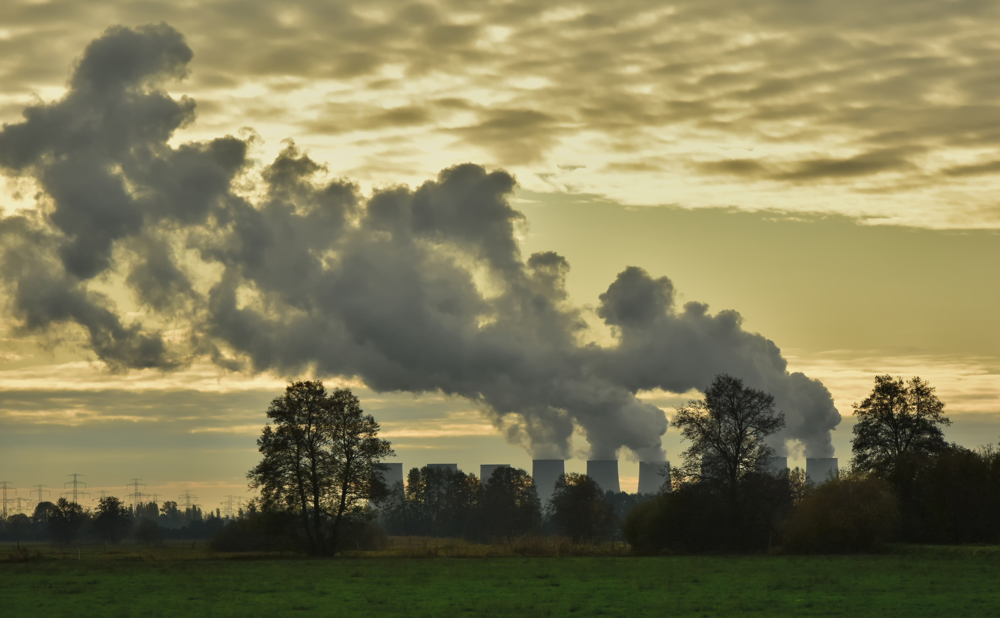
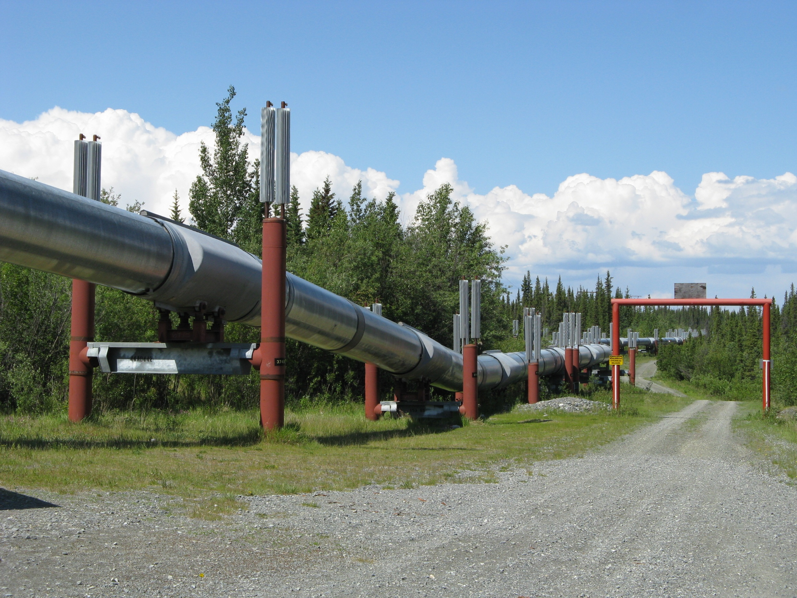
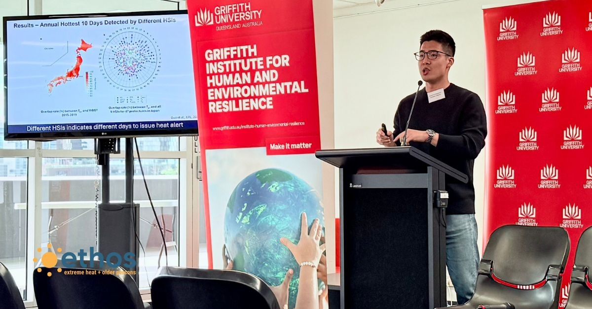
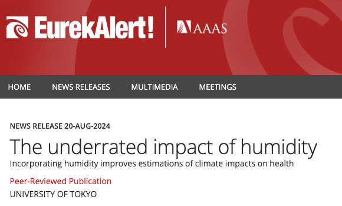

Climate Change
Urban Sustainability

University of Tsukuba
C2S Group is part of the Department of Engineering Mechanics and Energy,
within the Institute of Systems and Information Engineering
at the University of Tsukuba.
Our mission is to advance understanding of the impacts of anthropogenic climate change and to develop practical solutions for addressing these complex and evolving challenges.
We generate new insights into how climate change is reshaping both natural and human systems, with a focus on areas such as urban sustainability, extreme weather events, economic development, and water and food security. To achieve this, we leverage cutting-edge tools, including physically based models (e.g., GCMs, RCMs, LSMs), multi-source datasets (e.g., climate observations, remote sensing), and machine learning techniques.
We are actively seeking motivated Master’s and Ph.D. students with interests in hydrology, regional and urban climate, smart cities, climate change impacts, and machine learning to join our research team.
If you’re interested, please check the Join Us page, and feel free to contact the group PI, Prof. Guo.

"The 2025 Heat Early Warning System Symposium marked a pivotal moment in global climate adaptation, uniting researchers, policymakers, and practitioners from Australia, the United States, Europe, and the Asia–Pacific region for Australia’s first symposium dedicated to heat early warning systems"
“Understanding heat danger: considering humidity is effective — Japan and U.S. coastal regions | 暑さの危険把握、「湿度も考慮」が有効 日本や米沿岸”

"The underrated impact of humidity-Incorporating humidity improves estimations of climate impacts on health"